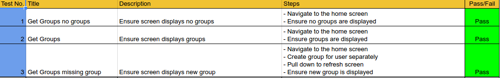

There has been huge progress since the last blog post. This is a post after submitting the project to go through what was submitted. I go through information on each section below.
The calendar screen now has an actual calendar again. I was able to implement a external widget from android aresnal that allowed functionality to switch between months and mark days. This is all the functionality I needed and so I deceided to integrate it with the entry list that I had before so that it also displays a list of entries for the selected day. The date time issue still remains for the andoird application however. The server returns a 400 Bad Request when I send a date time from the application, however if I do it from an outside REST client, the entry works perfectly. So for the submission, you can create an entry for the calendar, but you can only do it for the current day. You can also delete an entry, however I had similar issues with the editing so I left this piece of functionality out for now. The user can also delete any entries.
I was able to successfully integrate Google Cloud Messaging, or GCM for short, into the application. With GCM you can retrieve a registration id for a specific user and you can create device groups where you associate a set of registration ids with aa notifciation key on the GCM servers. Then whenever a message is sent in a group, the message is sent to that notification key and GCM distributes the message to all the registration ids associated with that notification key. When a user registers for the application a registration id is retrieved from the GCM servers and then I store this value for that user. Then when a user creates a group, I create a new device group on GCM and associate the appropriate registration id along with it. Then when the user goes to the messaging screen they can add text to the text field and click send. This will send the message to all the group members
Here's an axample of the request that's required to associate a group with a registration id for creation:
After this you can add people to the device group with a request in this form:
And here is how you send a message to a group:
For the submitted version of the messaging, there a few known issues. The first issue is that the messages are sometimes slow to deliver. This is out of my control as the sending is handled by GCM so this is something that has to stay. The next issue is that the messages themselves aren't stored, so when the used loses focus on the group screen, the memory is collected by the garbage collector and hence the messages are deleted from view. I have a small bit of back end implementation to store the messges done however this was not included in submission. The other issues are to do with the UX on the messaging screen itself, however I feel this is lower priority to the actual functionality available.
The to do list screen displays the items stored in the database for that group. The entries each have a priority as high, medium or low. The entries are displayed ina list format with the priority clearly indicated on each entry. When no entries exist there is an example entry to show the user what an entry would look like. There is an add button that lets the user create an entry, however just as with the calendar entry creation, the timestamps cause errors when the request is sent from the application so the functionality for picking a due date is not available. As with the calendar entry editing, this functionality is left out due to the timestamp issue. The user can delete entries on the list also.
I have been updating the functional test suite with the new functionality and have manually tested the user interface executing each test case. This test suite acts as a regresssion suite for ensuring older functionality still functions correctly after changes are made. The server is tested using JUnit and are updated upon any code updates to ensure they're testing properly.
As of the 23rd of May I have submitted the assignment. I am happy with what has been submitted. There's some functionality left out however this is for good reason. Here is the technical specification for the application and here is the user manual. These outline the technical details of what was implemented and how it was implemented. They are the final copies that were submitted.
Here are a couple of noteworthy ideas from expo feedback for possible future implementation:
Develop some function that can allow the users of a whatsapp group to automatically create a group in Agenda. This would be very benficial for groups initially starting as a whatsapp group but feel they needed more group related functionality.
Integration with holidays in the calendar. Firstly, have a default set of holiday days set in the calendar by default. This would allows users to see things like bank holidays and could help them recognise them and plan around it. Secondly, implement some form of calendar importing so that a user could import the details from another calendar into this calendar allowing the user to share details that they might want to share.
Most of the group and calendar functionality is implemented and functional tests created and executed. The application has also been tested by some users to cover some user acceptance testing. No issues were found. As I have not blogged in a while there is a good bit more functionality.
Users can now create a group, add members to groups and have all of their groups displayed in a list view on their main screen. Group members can change the name of the group and the group admin is able to remove members from the group. There are functional tests implemented to test this functionality, an example of some of the tests documented are shown in figure 1. This functionality will also be put through some more UAT from users of the system to ensure the functionality is up to standard and to get any feedback necessary.
The screen for an actual group is a tabbed view with tabs calendar, messaging and to-do list. Here users can swipe between views and pick the screen chosen.
For the calendar screen, I will need to change the design to have just a list of entries to the calendar which is sorted by the entries that will be next in time. I've also decided to implement a recurring feature to allow for repeated entries so users won't need to repeatedly create them. Expired entries will be hidden and shown upon request. There was an issue that I ran into where the date time could not be stored and retrieved properly from the database so I created a DateTime type handler that allows the data to be stored and retrieved correctly. The functionality is not too complex and simply handles how the data should be manipulated. Here is a screenshot of the class.
Next steps will be to create and implement the to-do list database, web service and user interface. This should not take long as the storage and supply of data is very similar to the calendar entries so any issues that I ran into with the calendar entry will be known. The messaging functionality will then follow which will now be using Google cloud messaging service to handle the communication between users through session keys stored on my side.
Figure 1. The log in now works. I had issues for a few days with returning the salt from the database and using it in the hash function. Solved this issue by storing the salt as a hex string which for some reason stays the same when converted to and from bytes unlike a string in java. Strange issue but it works now. The android code gave issues with converting to hex string due to lack of libraries for android.
I now need to create a transition from the log in screen to the main screen of the application. This will need some design work on the UI front. I also need to get Logging implemented for the server and android. I started design on the data models for the rest of the tables in the database, these are all initial ideas for the structures so they can be refactored later.
Users can now sign up through the server. The user must enter a name, email and password to register. The password is encrypted with a random salt and stored in the DB. I've fixed the issue with the repetitve code and made a generic service caller for calling the server from the application. I've added CORS to the server also, so that the application can communicate with the server.
The next plan of action is to implement tests, create documentation and finish the CI builds. All new development stops until tests, documentation and CI build are completed.
The application can now communicate from database to android application. I have test data in the database that can be accessed through a simple API to read on the android application. Spring have android functionality that makes communicating with a RESTful API, however the implementation is very bulky and needs serious improvement to be feasible for the application. I will need to wrap the framework in a facade to keep to the DRY principle as much as possible.
As for further development it is important to finish the architecture in order to move on. This architecture includes things like, getting the server and DB on an actual fixed server and not my laptop. It is also important to complete the CI builds with jenkins, which integrates well with maven and git, so that I can use good build practices to allow quick and easy deployment.
I have broken down the first set of stories in the "Log In" epic into the main stories that I can think of to implement a user being able to log in. Future stories will be broken and prioritised along with other stories, to ensure the main functionality is implemented, as time goes along.
The first plan of action is to implement the User sign up and log in functionality. UX and security are the main focus for sign up and log in.
The barebones of an application are coming together. A test web service is set up and almost connected with the database. The database server seems to have permissions issues blocking progress. Otherwise, the RESTful web service is working with basic mocked data. I created a kanban board using Taiga, a very useful free agile software development tool that I will be using to track issues, new work, work in progress, work ready for testing or work completed. At the moment there are huge stories(I would normally call epics) that I will break down into smaller stories and do correct pointing and split them by priority. I've set up a personal schedule for myself to do work on this project which may change as I go along depending on how development goes. Still a lot of work to do creating the android application, I am new to android development so there will be some growing pains however I hope to quickly get the connection with the application and the server all the way through to the DB working very soon. All of the repositories are set up and hosted on bitbucket, another very nice to use and free git repository hosting service.